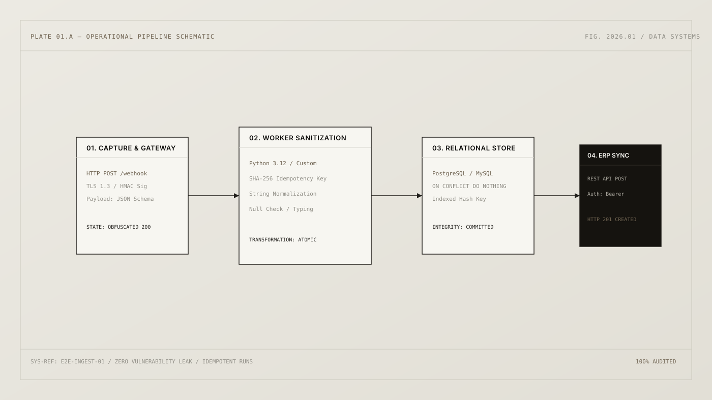

Operational Data Pipeline
Architecture for transforming operational inbound data into a structured analytical layer with zero endpoint vulnerability leakage.

The Vulnerability of Operational Ingestion
Commercial websites capture leads through webhooks. In typical setups, endpoint URLs, routing keys, or database structures are accidentally exposed to client-side inspect tools, making webhooks prone to DDoS, spam poisoning, or database connection exhaustion.
The requirement was to engineer a decoupled layer: the client interacts with an obfuscated gateway that validates TLS signatures, processes the payload asynchronously via Python workers, persists the clean record into relational storage with strict idempotency, and pushes verified events to the ERP API.
End-to-End Information Flow
↓ (POST sanitized JSON)
OBFUSCATED GATEWAY (Signature Verification)
↓
PYTHON WORKER (Schema Validation & SHA-256 Hash Computation)
↓
RELATIONAL STORE (ON CONFLICT DO NOTHING — Idempotent Persistence)
↓
ERP REST API SYNC (Automated Lead & Opportunity Creation)
Decisions, Trade-offs & Scale
Why Idempotency Keys?
Users frequently double-click submission buttons or webhooks retry upon transient network timeouts. Computing a deterministic SHA-256 hash across canonical identity fields guaranteed zero duplicated records in the CRM, saving hundreds of hours of manual deduplication.
What Would Change at Scale?
For volumes exceeding 50,000 daily events, synchronous Python execution would be decoupled into a Redis/Celery queue. This isolates the public gateway from external ERP API timeouts and protects transactional databases from traffic spikes.
Deterministic Python Worker
import hashlib
import json
from typing import Dict, Any
def generate_idempotency_key(payload: Dict[str, Any]) -> str:
"""Computes deterministic SHA-256 hash across canonicalized identity fields."""
normalized_identity = f"{payload.get('email', '').strip().lower()}:{payload.get('created_date', '')}"
return hashlib.sha256(normalized_identity.encode('utf-8')).hexdigest()
def process_inbound_lead(raw_payload: Dict[str, Any], db_conn) -> bool:
# 1. Schema enforcement
required = ['name', 'email', 'phone', 'company_size']
if not all(k in raw_payload for k in required):
raise ValueError("Malformed payload: Schema constraint violation")
idempotency_key = generate_idempotency_key(raw_payload)
# 2. Idempotent persistence
query = """
INSERT INTO inbound_leads (idempotency_hash, full_name, email, phone, metadata)
VALUES (%s, %s, %s, %s, %s)
ON CONFLICT (idempotency_hash) DO NOTHING
RETURNING id;
"""
with db_conn.cursor() as cur:
cur.execute(query, (
idempotency_key,
raw_payload['name'].strip(),
raw_payload['email'].strip().lower(),
raw_payload['phone'].strip(),
json.dumps(raw_payload.get('extra', {}))
))
inserted = cur.fetchone()
db_conn.commit()
return inserted is not None